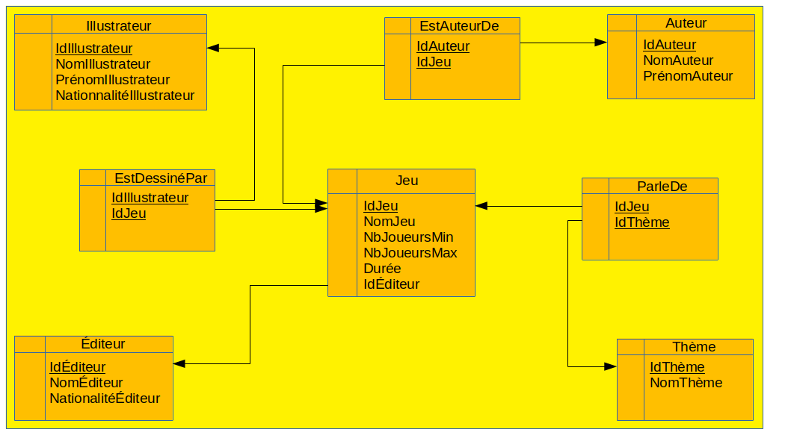

Contraintes de référence
Dans la partie précédente, nous avions notamment abouti à définir les 2 tables suivantes :
- Illustrateur(IdIllustrateur, NomIllustrateur, PrénomIllustrateur, NationalitéIllustrateur)
- EstDessinéPar(#IdIllustrateur, #IdJeu)
Dans les 2 tables, nous remarquons la présence d'un attribut IdIllustrateur. Bien sûr, ces 2 attributs ne sont pas indépendants les uns des autres : dans la table EstDessinéPar, les seuls valeurs que l'on peut mettre pour l'attribut IdIllustrateur sont des valeurs qui doivent exister pour l'attribut IdIllustrateur de la table Illustrateur (ce que l'on a représenté par un # dans le nom de l'attribut dont les valeurs dépendent de celles de l'autre). Dans le modèle relationnel, la notation # n'existe pas en tant que tel. Cette contrainte doit être représentée par une contrainte de référence. Dans l'exemple précédent, il faut donc créer une contrainte de référence de l'attribut IdIllustrateur de la table EstDessinéPar vers l'attribut IdIllustrateur de la table Illustrateur. On peut le noter ainsi : EstDessinéPar(IdIllustrateur) référence Illustrateur(IdIllustrateur).
Soient 2 relations RA et RB, attRA un attribut de RA et attRB un attribut clef de RB. Une contrainte de référence :
RA(attRA) référence RB(attRB).
NB1 : on dit parfois que attRA est une clef étrangère de RA.
NB2 : dans le cas général, les attributs attRA et de attRB n'ont pas forcément les mêmes noms même si c'est souvent le cas.
NB3 : dans le cas général, non traité ici, une contrainte de référence peut être définie d'un ensemble d'attributs vers un autre ensemble d'attributs (qui doivent former une clef) (et non plus forcément un seul attribut de chaque coté.
Précision : l'existence d'une contrainte de référence n'impose pas que des valeurs soient définies pour les attributs clé étrangère pour tous les tuples ; elle impose seulement que si une valeur est définie, alors cette valeur est présente pour les champs référencés de la table référencée.
Exercice : déterminer toutes les contraintes de référence sur le problème de la ludothèque (prendre le schéma de relation obtenu dans l'exercice 4 du cours "Modèle conceptuel d'une base de données relationnelle").
Voici la liste des contraintes de référence :
- Jeu(IdÉditeur) référence Éditeur(IdÉditeur) ;
- EstDessinéPar(IdIllustrateur) référence Illustrateur(IdIllustrateur) ;
- EstDessinéPar(IdJeu) référence Jeu(IdJeu) ;
- EstAuteurDe(IdAuteur) référence Auteur(IdAuteur) ;
- EstAuteurDe(IdJeu) référence Jeu(IdJeu) ;
- ParleDe(IdThème) référence Thème(IdThème) ;
- ParleDe(IdJeu) référence Jeu(IdJeu).
On peut aussi noter les contraintes de référence avec des flèches sur un graphe représentant les schémas de relation (c'est par exemple ce que proposent des outils comme Access ou Libre Office. Mais attention de ne pas mélanger cette représentation avec un diagramme de classes. Voici un exemple (représentation non normalisée) :
